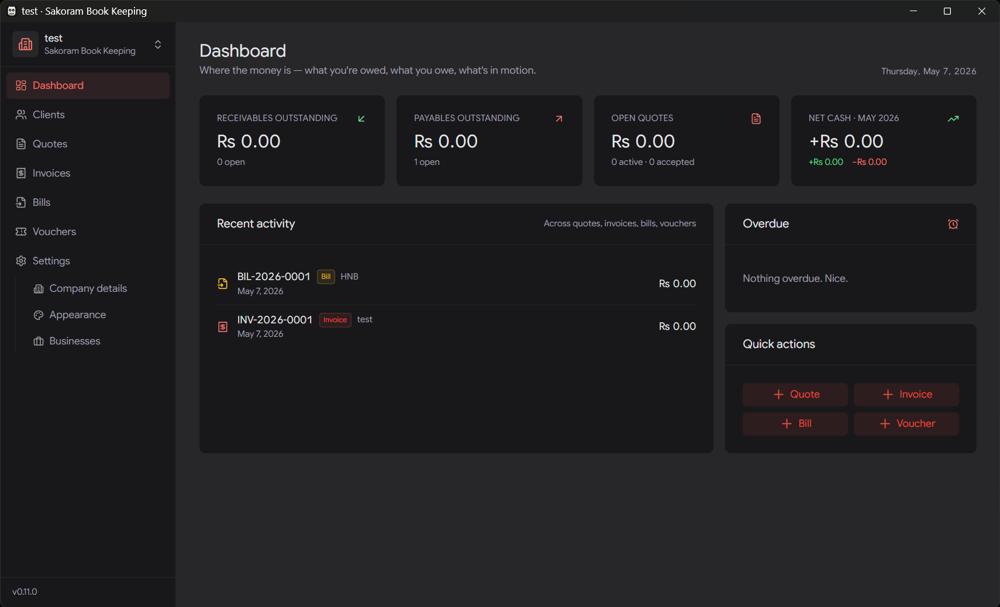
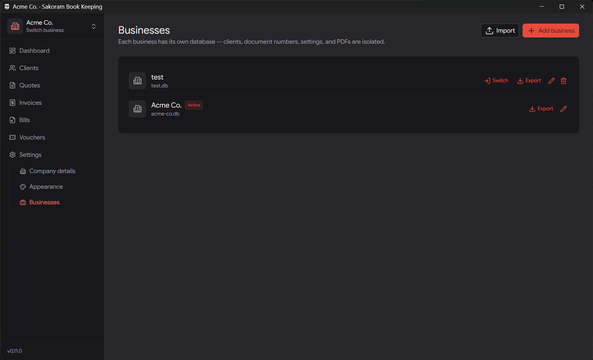
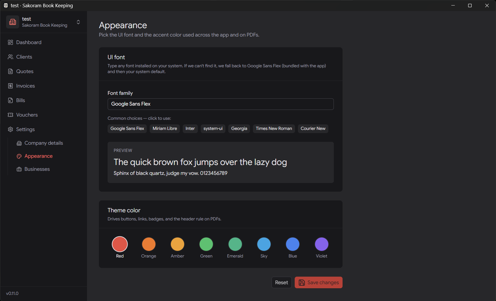

A fast, fully offline desktop app for small Sri Lankan businesses. Manage clients, quotes, invoices, bills and vouchers — and produce professional PDFs — all from a single local SQLite file. No servers. No accounts. No telemetry.

Quotes, invoices, bills and vouchers — wired together with status flows that match how the work really moves. No feature bloat, no monthly seats.
Full CRUD with archived state, contact details, and search. Client info is snapshotted onto every issued document so history doesn't drift.
Draftable line-item editor with bundle or itemized pricing. Status FSM goes draft → sent → accepted → converted, then converts to an invoice in one click.
Issue, track, and record payments via a per-invoice ledger — date, method, reference, notes. Auto-overdue handling. Once sent, totals are immutable.
Log vendor invoices with simple paid/unpaid tracking. Money-in receipts and money-out payments — vouchers can link to an invoice or bill.
Rendered with Typst via a bundled sidecar. Ships with the Miriam Libre font so output looks identical on every machine.
Manage multiple businesses, each in its own isolated SQLite file. Switch between them from the header — naturally separate number sequences.
One-click .zip backup of any business — database, logo, manifest. Restorable on the same or another machine. Backups are file-level.
Pick from an 8-color theme palette and set a custom UI font. Both apply to the app and the PDFs you send to clients.
LKR currency, April–March fiscal year, integer-cents money math (no float drift, banker's half-even rounding). Defaults that just fit.
Dark UI, calm density, keyboard-friendly. Every screen is built around one question: where is the money?
Receivables, payables, open quotes, and net cash for the month — right where you open the app. Recent activity and overdue alerts sit a glance away.

Each business is a complete SQLite file — its own clients, its own number sequences, its own logo. Switching is a context change, not a database query filter.
Pick a UI font and an accent color from an 8-color palette. The choice carries over to the PDFs your clients receive, so your books and your brand stay aligned.

These aren't optimizations. They're the kind of choices that separate a toy ledger from a tool you can run a business on.
All math uses integer cents of LKR with banker's (half-even) rounding — no floats, ever. No fraction-of-a-rupee drift across thousands of invoices. app/lib/money.ts
Once a quote or invoice is sent, totals are frozen. Client info is snapshotted as JSON at issue time, so historical documents don't change when a client is later edited.
Document numbering is implemented as a single INSERT … ON CONFLICT … DO UPDATE … RETURNING per (document_type, fiscal_year). No skipped numbers, even under crashes.
Each tenant is a full SQLite file, not a business_id column. Simpler queries, cleaner backups, isolated number sequences — and you can hand a single file to your accountant.
The kind of stack you can come back to in three years and still run.
Each business is a separate SQLite file under your OS app-data directory. Backups are file-level — exporting a business is just zipping its SQLite plus its logo.
# macOS · Windows path is %APPDATA%\com.sakoram.billing\ com.sakoram.billing/ ├─ tenants.json # registry of businesses ├─ businesses/ │ ├─ acme-co.db # active business │ └─ test.db └─ logos/ ├─ acme-co.png └─ test.png
No. Sakoram is fully offline by design. Sync is a tradeoff and we picked simplicity. If you want a copy on another machine, export the .zip and import it there.
Nothing. It's MIT-licensed and free to download and use, including for commercial bookkeeping.
Your data lives in a folder on your computer. No telemetry, no analytics, no servers. Back it up the same way you back up any other folder you care about.
Yes — the current build is unsigned, so Windows SmartScreen will warn on first run. Click "More info" → "Run anyway". Code-signing is on the roadmap.
The line-item editor handles itemized pricing and you can express tax as line items. Native first-class tax support is a planned addition.
The codebase is cross-platform (Tauri 2). Windows installers are shipped today; macOS and Linux builds can be produced from source. Star the repo if you want them prebuilt.
That's the whole onboarding. No accounts to make, no integrations to wire, no monthly seat to pay for.